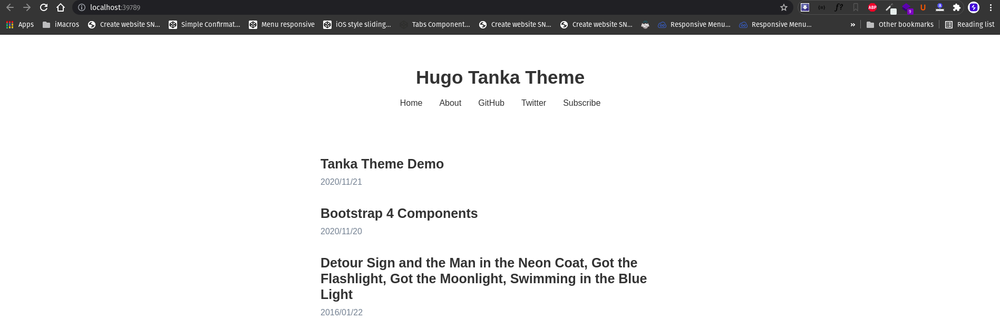

Membuat Blog Pribadi Menggunakan Hugo

Memilki sebuah blog pribadi merupakan salah satu langkah untuk memperkenalkan diri kepada orang lain. Hadirnya blog pribadi akan membuatmu lebih mudah untuk ‘menjual’ diri Kamu. Sehingga orang-orang akan cepat mengetahuimu lewat karya hingga tulisan yang diterbitkan di blog pribadi milikmu. Tentu saja blog pribadi yang Kamu bangun haruslah memuat informasi mengenai identitas pribadi, kontak, portofolio yang sudah Kamu kerjakan, dan tulisan-tulisan yang Kamu terbitkan.
Nah, apalagi sebagai programmer memiliki blog adalah sebuah kewajiban. Karena basic-nya adalah programmer, tentu membuat blog pribadi bukanlah hal yang sulit dilakukan. Namun, jika Kamu malas untuk merancang dan membangun sebuah blog. Maka, tulisan ini bisa menjadi solusimu untuk membangun blog pribadi yang menarik dan keren.
Untuk membuat blog pribadi yang sederhana dan memiliki tampilan yang menarik, Kamu dapat mencoba membangun sebuah blog menggunakan Hugo. Pertanyaannya, kenapa Hugo? Tentu saja alasannya yaitu Hugo merupakan Static Site Generator (SSG) yang paling cepat dan mudah untuk dipelajari menurut Saya. Jika dibandingkan web framework sejenis, seperti Jekkyl, maka Hugo jauh lebih baik dan keren.
Pada tulisan pertama di blog ini, Saya akan coba memberikan tutorial atau panduan untuk membangun sebuah blog menggunakan web framework Hugo. Saya akan coba untuk menjelaskannya secara detail, dan tentu saja harapannya pembaca dapat memahami apa yang Saya sampaikan pada tulisan ini.
Daftar Isi
Apa Itu Hugo?
Hugo is one of the most popular open-source static site generators. With its amazing speed and flexibility, Hugo makes building websites fun again.
Hugo adalah salah satu framework open-source popular dan tercepat untuk membangun sebuah website. Dengan menggunakan Hugo, Kamu dapat mengatur tampilan dan fitur sesuai yang diinginkan dengan mudah. Jika sebelumnya Kamu sudah menggunakan framework Jekyll, maka framework Hugo ini mirip seperti Jekyll. Bedanya framework Hugo ini baik, cepat, dan juga kaya akan fitur. Sehingga, Kamu bisa melakukan kustomisasi blog sesuai kemauanmu.
Hugo ini dibangun menggunakan bahasa pemrograman Go, salah satu bahasa pemrograman yang memiliki kecepatan, efisiensi, dapat diandalkan, dan sederhana. Karena dibangun menggunakan bahasa Go, maka sudah dipastikan bahwa klaim sebagai The world’s fastest framework for building websites tak dapat diragukan lagi.
Selain itu Hugo juga menyediakan tema yang bisa Kamu pilih. Ada banyak jenis-jenis tema, mulai dari company profile hingga personal blog. Kamu bisa memilihnya pada halaman ini.
Langkah-langkah Membuat Blog Dengan Hugo
Langkah pertama yang diperlukan untuk memakai Hugo sebagai framework blog kamu ialah kamu harus menginstall terlebih dahulu Hugo di komputer milikmu. Selain itu, ada beberapa software yang harus Kamu install dahulu di komputer Kamu.
Dalam tulisan ini, Saya memberikan tutorial atau panduan menggunakan sistem operasi Linux. Untuk sistem operasi lain, Kamu bisa masih bisa mengikuti panduan ini, karena tidak beda jauh. Hanya beda pada proses instalasi tools yang nantinya akan digunakan saja. Yuk, mari saja Kita mulai tutorial atau panduannya!
Instalasi Git, Go, dan Hugo
Pertama Kamu harus melakukan instalasi untuk tools yang nantinya akan digunakan untuk membangun blog dengan Hugo, antara lain :
- Git : Untuk manajemen repositori, upload, dan deploy ke Github.
- Go : Bahasa pemrograman Go.
- Hugo : Untuk membangun blog SSG.
Install Git di Linux
Pertama update dahulu manajemen paket Linux Kamu.
sudo apt updateSetelah update selesai, Kamu bisa mulai install Git.
sudo apt install gitSetelah melakukan install Git, silakan Kamu cek apakah proses instalasi telah berhasil dilakukan dengan benar.
git --versionJika yang keluar seperti ini, maka proses instalasi Git berhasil dilakukan dengan benar.
git version 2.25.1Install Go di Linux
Langkah selanjutnya adalah instalasi bahasa pemrogramman Go di komputer Kamu. Untuk melakukan install lewat apt ketik perintah berikut ini.
sudo apt install golangSetelah melakukan install bahasa pemrogramman Go, silakan Kamu cek apakah proses instalasi telah berhasil dilakukan dengan benar.
go --versionJika yang keluar seperti ini, maka proses instalasi Go berhasil dilakukan dengan benar.
go version go1.13.8 linux/amd64Install Hugo di Linux
Instalasi Hugo bisa dilakukan dengan 2 cara, yaitu lewat apt dan manual. Namun untuk versi yang apt, masih menggunakan versi yang lama. Jadi lebih baik Kamu lakukan instalasi secara manual.
Pertama silakan buka dahulu repositori Hugo, dan ambil versi terbaru dari Hugo. Disini Saya ambil contoh untuk instalasi versi Hugo 0.83.1 di Linux 64-bit.
wget https://github.com/gohugoio/hugo/releases/download/v0.83.1/hugo_0.83.1_Linux-64bit.debSetelah itu instal dengan dpkg atau apt deb:
apt deb hugo_0.83.1_Linux-64bit.debSetelah melakukan install Hugo, silakan Kamu cek apakah proses instalasi telah berhasil dilakukan dengan benar.
hugo versionJika yang keluar seperti ini, maka proses instalasi Hugo berhasil dilakukan dengan benar.
hugo v0.83.1-5AFE0A57 linux/amd64 BuildDate=2021-05-02T14:38:05Z VendorInfo=gohugoioOkay, sekarang Kamu sudah berhasil melakukan instalasi tools yang akan digunakan untuk membangun sebuah blog dengan Hugo. Sekarang, saatnya membuat blog menggunakan Hugo dimulai!
Membuat Blog Dengan Hugo
Untuk membuat blog menggunakan framework Hugo, Kamu tinggal lakukan perintah berikut ini.
hugo new site [nama_blog]Contohnya, disini Saya akan membuat blog dengan nama owlone, maka syntax-nya akan seperti ini.
hugo new site owloneMaka Hugo akan secara otomatis membuat blog dengan struktur default-nya seperti ini.
Sampai sini Kamu sudah berhasil membuat blog dengan Hugo, namun isinya masih kosong. Karena Kamu baru saja membuat base awal untuk sebuah blog, selanjutnya tinggal menambahkan tema dan lakukan kustomisasi. Untuk memulainya, Kamu bisa membuka project blog barumu dengan editor favorit milikmu. Disini Saya akan membukanya menggunakan Visual Studio Code.
Menambahkan Tema Hugo
Sebelum menambahkan tema pada blog milikmu, pertama silakan pilih dahulu template awal yang akan Kamu gunakan. Kamu bisa memilihnya pada halaman ini.
Disini Saya akan memberikan contoh untuk menggunakan template Hugo Tanka. Pada contoh ini, Saya akan menambahkan tema lewat Git, jadi pastikan Kamu berada di direktori blog Hugo yang sudah dibuat tadi. Selanjutnya Kamu tinggal jalankan perintah seperti ini.
git clone [Link Github] themes/[Nama Tema]Karena Saya akan menggunakan Hugo Tanka, maka perintahnya seperti ini.
git clone https://github.com/nanxstats/hugo-tanka.git themes/hugo-tankaSehingga nanti secara otomatis akan melakukan cloning ke folder themes.
Maka, direcotry-nya bertambah dan akan menjadi seperti ini.
Langkah selanjutnya adalah Kamu mengikuti dokumentasi dari template yang akan digunakan. Biasanya sebuah tema menyediakan contoh yang dijadikan sebagai acuan untuk membuat blog. Misalnya pada tema yang dipilih Hugo Tanka. Pada dokumentasi tema ini, Kamu dapat melihat contohnya pada folder exampleSite dan biasanya semua contoh dokumentasi tema Hugo disimpan pada folder tersebut.
Sebagai informasi, untuk konfigurasi default-nya sendiri, Hugo menggunakan config.toml, config.yaml, atau config.json yang dapat ditemukan pada root folder. Seperti yang terdapat pada folder exampleSite, Kamu menemukan sebuah file konfigurasi config.toml. Konfigurasi inilah yang dapat Kamu pakai pada blog yang sudah dibuat sebelumnya. Kamu dapat memakainya dan mengubahnya sesuai dengan kebutuhanmu.
Misalnya Saya akan mengikuti semua konfigurasi tema ini sesuai dokumentasi yang diberikan. Maka, Kamu tinggal copy and replace seluruh file yang ada di folder exampleSite ke folder root blog Hugo milikmu. Setelah semua konfigurasi dan sample konten sudah di-copy ke root folder blog Hugo, langkah selanjutnya Kamu tinggalkan jalankan perintah berikut ini di terminal.
hugo serverMaka akan muncul URL di terminal, lalu buka URL yang ada di terminal di browser milikmu. Tada! Sekarang Kamu berhasil menjalankan blog Hugo milikmu di local.

Sekarang kamu sudah bisa mulai blogging dengan Hugo. Langkah selanjutnya adalah memahami konfigurasi dan kustomisasi tema untuk keperluan blogmu.
Konfigurasi Hugo dan Kustomisasi Tema
Setelah melakukan instalasi tema pada blog Hugo milikmu, langkah selanjutnya adalah melakukan konfigurasi dan kustomisasi tema agar sesuai dengan kebutuhan blog yang ingin Kamu bangun. Untuk melakukan konfigurasi pastikan Kamu membaca semua dokumentasi dari tema yang digunakan dengan benar. Karena setiap tema memiliki konfigurasi yang berbeda-beda, salah satunya penggunaan variabel yang harus sama persis.
Konfigurasi Hugo
Pertama yang perlu Kamu perhatikan ialah file config.toml, config.yaml, atau config.json yang ada pada proyyek blogmu, yang sebelumnya sudah kamu sesuaikan dengan konfigurasi yang sudah ada. File ini merupakan bagian yang berperan penting dalam proses pembuatan blog Hugo-mu nanti. File ini berisi konfigurasi blog Kamu, oleh karena itu yang perlu Kamu atur sesuai keinginanmu pastinya adalah file ini terlebih dahulu.
Misalnya seperti yang terdapat pada file config.toml yang ada pada tema yang di pilih, Kamu ingin mengubah menu yang ditampilkan.
[[menu.primary]]
name = "Home"
url = "/"
weight = 1
[[menu.primary]]
name = "About"
url = "/about/"
weight = 2
[[menu.primary]]
name = "GitHub"
url = "https://github.com/nanxstats"
weight = 3
[[menu.primary]]
name = "Twitter"
url = "https://twitter.com/nanxstats"
weight = 4
[[menu.primary]]
name = "Subscribe"
url = "/index.xml"
weight = 5Kamu dapat menghapus salah satu menu atau mengatur ulang susunannya. Misalnya menjadi.
[[menu.primary]]
name = "Home"
url = "/"
weight = 1
[[menu.primary]]
name = "About"
url = "/about/"
weight = 2
[[menu.primary]]
name = "Contact"
url = "/contact/"
weight = 3Maka tampilan dari menu akan menjadi seperti dibawah ini.
Selanjutnya, misalnya Kamu ingin mengubah konfigurasi lainnya. Maka Kamu tinggah ubah saja semua konfigurasi yang ada pada tema pada file config.toml. Contoh lainnya seperti ini.
title = "Hugo Tanka Theme Demo"
author = "Nan Xiao"
[params]
sitename = "Hugo Tanka Theme"menjadi
title = "Blog Saeful Rahman"
author = "Saeful Rahman"
[params]
sitename = "Blog Saeful Rahman"Pada konfigurasi diatas, Saya mengubah judul, nama blog, dan nama penulis. Maka blog akan berubah menjadi seperti ini.
Oleh karena mengubah file config.toml sangat berpengaruh pada blog Kamu nantinya, oleh karena itu Kamu perlu memperhatikan variabel apa saja yang dapat diganti untuk menyesuaikan dengan blog yang Kamu inginkan.
Kustomisasi Tema
Sebelum kustomisasi tema pada blog Hugo milikmu. Penting bagi Kamu untuk memhami mengenai struktur direktori dari framework Hugo ini. Menurut Saya, struktur direktori Hugo ini dibangun dengan sangat baik, dimana dikelompokkan dengan baik dan sesuai jenis datanya. Jadi, Saya rasa Kamu tidak akan kesulitan untuk mempelejari stuktur direktori.
Ketika di-generate pertama kali saat membangun blog Hugo, terdapat 6 buah direktori dan 1 buah file. Berikut penjelasan singkat dari tiap ditektorinya :
-
Direktori archetypes : Direktori ini berisi archetype atau template Front Matter dari konten. Misalkan Kamu punya lebih dari satu jenis konten: Ada artikel, portofolio, contact, catatan, dll. Maka Kamu harus membuatkan archetype untuk masing-masing jenis konten tersebut.
-
Direktori content Sesuai namanya, direktori ini adalah lokasi tempat Kamu membuat dan menyimpan konten blogmu nantinya. Untuk format kontennya menggunakan markdown.
-
Direktori data : Direktori ini berisi data-data dalam format JSON, YAML, TOML dan lain-lain. Misalnya, Kamu ingin membuat blog dengan banyak penulis. Maka data-data penulis dapat Kamu simpan disini.
-
Direktori layouts : Direktori ini berisi file HTML untuk tema atau layout blognya. Jika Kamu ingin membuat tema default-nya, Kamu bisa mengaturnya disini.
-
Direktori static : Direktori ini untuk menyimpan file statis, seperti CSS, JavaScript, gambar, dan lainnya.
-
Direktori themes : Persis seperti namanya, direktori ini untuk menyimpan file tema-tema dari blog Hugomu.
-
File config.toml : Berisi semua konfigurasi blog Hugo.
Sederhananya seperti itulah struktur direktori dari blog Hugo. Setelah memahaminya, Kamu bisa memulai untuk melakukan kustomisasi tema milikmu sendiri.
Misalnya disini Saya akan coba menambahkan halaman baru pada blog Hugo dengan nama Contact, untuk mengisi halaman kosong pada menu baru yang dibuat tadi. Karena tema ini sudah diatur untuk tampilan default dari setiap content yang dibuat, yaitu pada direktori layouts/_default, maka Kamu tinggal buat saja isi dari kontennya seperti ini.
hugo new contact.mdMaka Hugo akan secara otomatis membuat file bernama contact.md pada folder content. Kamu buka file tersebut dan isi kontennya sesuai kemauanmu, misalnya sepert ini.
---
title: 'Contact'
date: 2021-06-14T15:59:18+07:00
---
Ini adalah contoh halaman contact blog Saeful RahmanKamu dapat membukanya dengan URL /contact/ atau klik saja menu Contact pada navbar. Sehingga akan seperti ini.
Menulis Artikel Menggunakan Hugo
Untuk memulai membuat artikel menggunakan Hugo, Kamu harus pahami dulu posisi lokasi dari konten artikel blog Hugo milikmu. Karena disini Saya menggunakan template Hugo Tanka, dimana lokasi konten disimpan pada direktori content/blog. Maka, Kamu tinggal membuat artikel baru pada direktori tersebut dengan perintah.
hugo new blog/artikel-pertama.mdOh iya, untuk format dari artikelnya Kamu samakan juga dengan contoh konten dari tema yang dipakai. Kamu tinggal copy dan paste saja untuk format markdown artikelnya pada direktori exampleSite/content/blog. Contohnya format dan isi konten pada tema yang Saya gunakan untuk artikel pertama ini, seperti berikut.
---
title: 'Artikel Pertama'
author: 'Saeful Rahman'
date: 2021-06-14T16:14:53+07:00
---
Ea eam postea facilisi. Nullam forensibus consequuntur usu ea, no ius consul delectus periculis. Eam veri numquam an. Et partiendo gubergren eam. Quod iudicabit has ex, eam diam facilisi eu, elitr aliquip no eum.Sekarang tinggal simpan, dan Kamu cek di browser milikmu.
Jika Kamu sudah berhasil membuatnya, Kamu hanya perlu mengulangi langkah yang sama untuk setiap artikel atau konten yang ingin Kamu tambahkan. Cukup mudah bukan?
Nah, apakah sekarang Kamu sudah tertarik untuk mencoba membuat blog dengan Hugo ? Ayo silakan dicoba ya!

Saya seorang professional Web Developer yang telah berpengalaman selama kurang lebih 6 tahun. Saya berhasil membuat website yang responsif, cepat, dan mudah digunakan. Bidang keahlian utama Saya adalah Front-End Developer, seperti CSS, HTML, dan JavaScript untuk membangun website skala kecil hingga menengah.
Related Post

Cara Menggunakan SSH di Github
Dengan menggunakan protokol SSH, Kamu bisa terhubung dan remote ke server secara jarak jauh. Lewat kunci SSH Kamu bisa terhubung dan akses ke server t...

Cara Hosting atau Deploy Hugo di Github Pages
Github adalah salah satu layanan khusus developer yang dibuat karena terinpisrasi dari cara bekerja pada pogrammer. Singkatnya Github adalah sebuah ma...